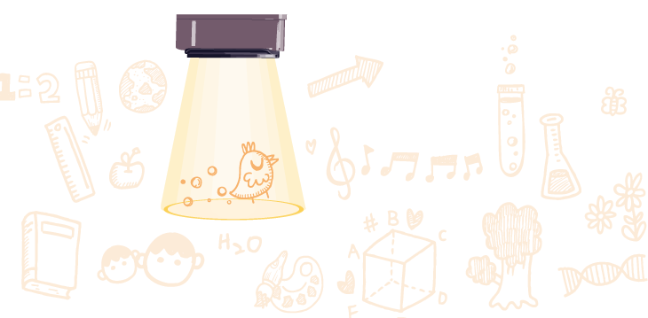
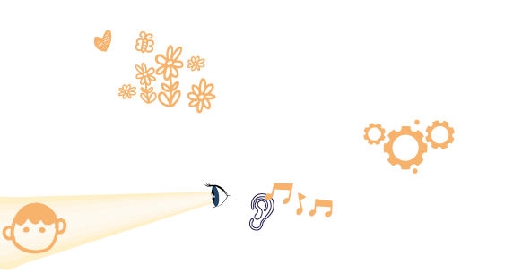
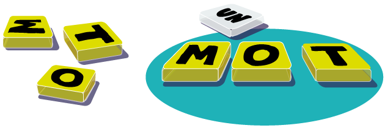
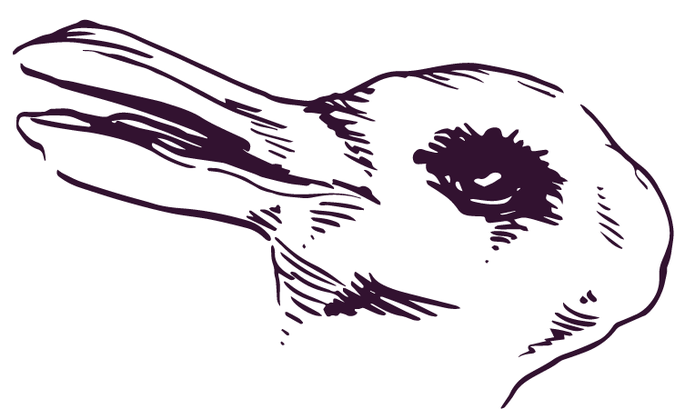

Attention !
CanardMasqué, j’en ai marre ! À l’école, on me reproche mon manque d’attention, à la maison on me dit de faire attention, et Wendy m’a dit que je ne faisais pas assez attention à elle…
C’est vraiment trop injuste !

Ah oui… L’attention est une notion assez vaste, qui recouvre la concentration (ce qui te manque à l’école, ahem), la vigilance (tenir compte de ton environnement immédiat pour ne rien casser), et l’intérêt que tu portes à Wendy…
Comment va-t-elle, d’ailleurs ?
Elle, elle va très bien !
C’est moi qui ai besoin d’attention, là !
Oui oui
Tu crois que j’ai un déficit d’attention ?
Qu'il me manque quelque chose ?
Lorsqu’une personne est distraite, elle ne manque pas d’attention, elle positionne uniquement son attention sur quelque chose d’autre.
Mais… C’est quoi, au juste, l’attention ? Pourquoi c’est aussi dur de se concentrer, des fois ?
Imagine un projecteur. On dirige son faisceau sur une partie de ce qui nous entoure : il met en lumière cette partie et laisse le reste dans l’ombre. 
C’est exactement ce que fait l’attention
Mais on peut aussi « décrocher » de ce qui nous entoure et partir dans ses pensées, comme en classe, des fois. (J’avoue )
Pourquoi on fait ça ?
Tu as raison, ma métaphore n’était pas complète : le faisceau du projecteur peut être dirigé sur la perception d’un objet externe, que nous entendons ou que nous voyons, ou vers un phénomène mental, comme une pensée ou une envie… 
Et comme notre attention est limitée, si nous sommes attentifs à un objet ou une tâche, ce qui est autour nous échappe.
À quoi ça sert ?
À traiter l’information : si tous les stimuli qui nous entourent à tout moment arrivent en même temps, notre cerveau ne peut pas suivre. Parmi cette multitude d’infos, notre cerveau sélectionne celles qui lui paraissent les plus importantes…
Je serais curieux de connaître les critères d’importance de mon cerveau : ça part dans tous les sens !!
Le cerveau sélectionne en fonction de nos goûts, de nos habitudes, ou de ce que nous cherchons à faire à ce moment-là.
Les goûts et les habitudes aussi, ça joue ?
Tout à fait. Il existe un type de distraction, qui active dans notre cerveau ce que l'on appelle le système de récompense : lorsqu’on pense à ce que l’on a envie de faire, comme jouer avec ses copains plutôt que de faire ses devoirs, par exemple
Comme quand je pense à Wendy
Quant à l’habitude, elle permet de rendre certaines tâches automatiques. On peut par exemple marcher et discuter en même temps, parce que marcher est une activité que nous avons automatisée…
Ah oui !
Alors que si on fait de l'escalade, on doit se concentrer pour savoir où on met les pieds : c’est plus compliqué de tenir la conversation
Exactement ! Et pense à la lecture : nous percevons les signes que sont les lettres, nous les assemblons pour former un mot, auquel nous associons un sens… C'est super compliqué, en fait !
Heureusement, l’habitude nous permet d’automatiser cet ensemble de tâches, qui devient comme un réflexe. 
Pour un lecteur expérimenté, quand la lecture est devenue un automatisme, il est même très difficile de ne pas lire et de considérer un mot comme un objet quelconque.
C'est vrai : quand je vois des affiches je ne peux pas m'empêcher de lire, même quand ce sont des pubs débiles
Alors on ne peut pas faire deux choses en même temps, sauf si l'une d'entre elles est devenue automatique ?
Si nous cherchons, volontairement, à réaliser plusieurs tâches à la fois, notre attention est mise en difficulté.
Pourtant, des fois, on a l'impression de faire plusieurs choses en même temps…
Quand deux tâches se présentent en même temps, notre système attentionnel se divise et bascule de l’une à l’autre.
La bascule se passe en quelques millisecondes, sans que nous en soyons conscients, et nous pensons que nous faisons deux tâches à la fois. Mais il y a alternance : le cerveau perçoit un signal, puis bascule sur le suivant.
On passe sans arrêt du coq à l'âne, quoi !
C'est tout à fait ça !
Observe bien ce dessin :
Selon comment tu le regardes, tu y verras un lapin ou un canard. Mais tu ne peux pas voir les deux en même temps.
Il faut avoir un cerveau super organisé !
D'une certaine façon, oui : avoir une idée claire de la tâche à accomplir est essentiel.
Mais… Quand je joue aux jeux vidéos, je surveille plein de choses à la fois, tout en décidant si j’avance par là, ce que je fais ici, etc.
C’est ce que l’on appelle la vigilance, ou l’attention soutenue, primordiale dans l’exercice de certains métiers qui demandent de réagir rapidement à l’apparition d’événements rares.
(Elle a d’ailleurs été définie en référence au travail des contrôleurs aériens chargés de surveiller un écran radar pendant des heures.)
Des expériences ont mis en évidence que ceux qui jouent à des jeux vidéo deviennent hyper-réactifs à certaines cibles importantes pour le jeu, même après un long moment d’attente…
Les jeux vidéo musclent mon attention !
Ce sont des capacités cognitives modernes, alors !
Ben… Il y a déjà un million d’années et plus, tu sais, nos ancêtres chasseurs devaient exercer une vigilance exceptionnelle pour se procurer de la viande et éviter les prédateurs.
Pister les signes laissés par les animaux implique toute une palette d’atouts cognitifs, comme la déduction, la mémoire, l’élaboration d’hypothèses, etc.
Oui, bon !

Mais si c’est si important, pourquoi notre attention se disperse-t-elle aussi facilement ?
Parce qu'il y a des pièges.
Un cri, un claquement de porte, quelque chose qui clignote ou un gilet fluo, et notre attention est aussitôt captée. Certains neurones de notre cerveau sont capables de détecter rapidement les objets ou événements saillants autour de nous et de rediriger notre attention en une fraction de seconde.
Ce mécanisme de distraction s'appelle la saillance.
Distraction ? Quand on dit qu'on est distrait, c'est plutôt pour dire qu'on rêve, non ?
Comme quand je pense à Wendy
Et dès qu'elle est là, elle doit clignoter parce que je la vois tout de suite !
Eh oui ! Le visage humain est un objet saillant. Surtout quand nous connaissons la personne, et plus encore si nous l'apprécions
Mais j'y pense… Les écrans, smartphones ou ordinateurs, sont aussi des objets saillants, du coup !
Il y a des saillances partout
C'est vrai. Notre époque rencontre une difficulté que n'avaient pas les précédentes périodes : nous vivons dans un univers d’informations massives.
Le phénomène de saillance est d'ailleurs exploité par les médias et les agences publicitaires, qui consacrent des budgets importants pour créer et faire circuler des masses d’informations (affiches, films, musique, internet, images, etc.), pour capturer notre attention.
C’est ça, qu’on appelle l’économie de l’attention ?
Tout à fait !
On peut quand même décider à quoi
on veut faire attention, non ?
Bien sûr : on peut diriger de manière volontaire notre attention sur un objet physique, ou une image mentale. Cela revient à sélectionner et privilégier l’activation d’un réseau de neurones parmi d’autres (des neurones de la perception, de la mémoire de travail, de la motricité) pour en renforcer et en stabiliser l’activité…
Dit comme ça
Mon astuce pour rester concentré, c’est de bien définir ce que je dois faire, prévoir les différentes étapes et les suivre.
Dès que je cherche à réaliser plusieurs tâches en même temps, ou à brûler les étapes, mon attention s'éparpille et est mise en difficulté.
Je crois que j’ai compris
Tu verras : si tu es attentif, l’objet de ton attention gagne en clarté, la qualité de ce que tu fais augmente, comme le plaisir de le faire…
Wouah !  En fait c’est carrément précieux !
En fait c’est carrément précieux !
Je ferai attention à mon attention